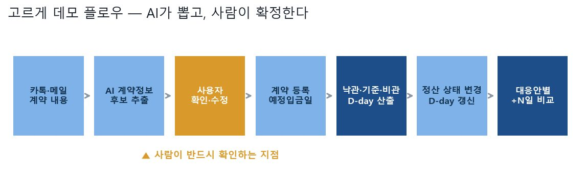

Finance · AI / Data Portfolio
멀리서 구조를 잡고, 가까이서 근거를 확인합니다
미대 입시에서 형태를 쪼개던 훈련이, 데이터를 보는 방식이 되었습니다.
LEE YOONJI이윤지 · 덕성여자대학교 디지털소프트웨어공학과
숫자로 보는 기록 📊
0.9672
Recall
피싱 문자 탐지 — 피싱 비율 1.4%의 극단적 불균형에서
r = 0.89
상관 · p=0.043
공시 시그널과 협력사 분기 매출 (한미반도체)
80%+
일치
결빙 위험지수 상위 10% ∩ 실제 민원 다발 구간
1.000000
재현 일치율
LG Aimers 제출 코드 라벨 역산 검증
대표 프로젝트 📖
금융 도메인 연관도가 높은 세 가지입니다. 전체 11개 보기 →

2026.05 – 2026.07NOVA — 협력사 위기 조기탐지 시스템
재무제표가 나오기 전에 공시 언어의 변화로 원청–협력사 연쇄 부실을 미리 잡아내는 여신 리스크 시스템
약 3배 위기기업 드리프트 점수 32.0…

2026.09고르게 (Goreuge)
프리랜서의 미수금 지연이 현금흐름에 미치는 영향을 계산해, 언제까지 버틸 수 있는지 D-day로 보여주는 MVP
115 커밋
2026.08 – 2026.09공시 Agent · Dartrio
DART 전자공시 원문을 근거로 인용하며 답하는 재무공시 RAG 에이전트
4,204 공시 원문